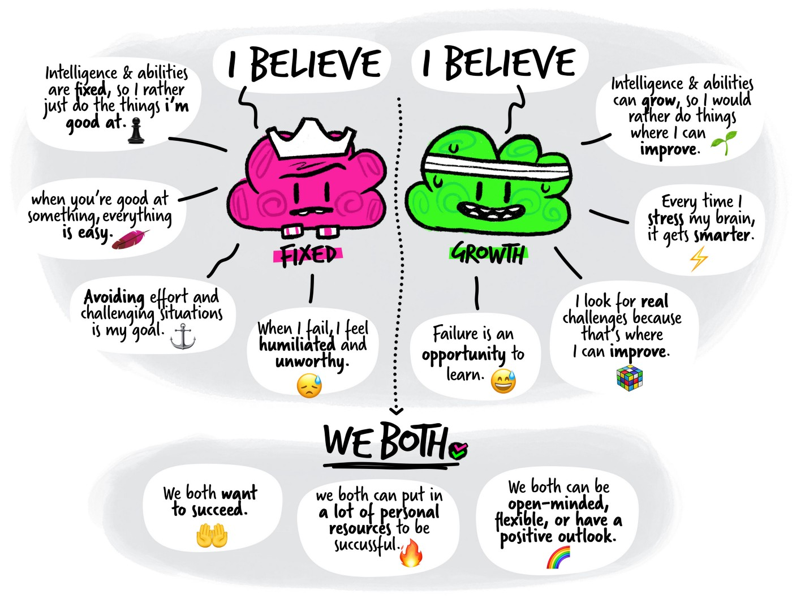
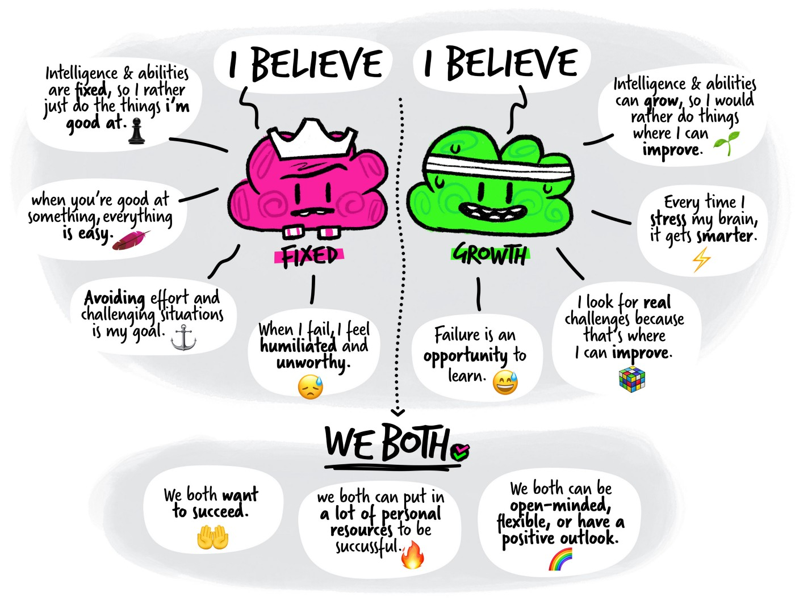

Neuroplasticity and Growth Mindset
1. Neuroplasticity benefits
Neuroplasticity is abit like visualize learning, when you learning something in your mind this will create a pathway in your brain. It's the same with negative thought, if you keep creating new negative thought it will add up, stay in your brain and create more and more path that becomes an easy path for you to go down. The same go with learning as you keep learning a skill like coding or cooking you will create a pathways in your brain and more of that study idea and thought it will add up and stay in your brain even when you visualize it. It's really useful when it come to study, learning but renember to take some the time to reflect on your learning will help you actually get better.
2. How to use neuroplasticity
I think the most useful ways for me to increase my neuroplasticity is to engage more in active reflection on what I have learnt, taking sometime to review my work that i have done.
I found this YouTube that gonna help you
Improving your neuroplasticity.
3. Growth Mindset
A Growth mindset is simply just the idea that you will keep continuing to grow, in yourself, in your skills, in any way you want and you won't beat yourself up along the way.
The best thing you can do is to try something and keep going, even when it's hard or your fail. As a great one said failure is the mother of success.
As myself i have try to calm my mental health and repeat in my mind that i can do it as long as i dont give up along with some meditation when i cant handle my thought well.
I found this Ted Talk that you might wanna have a look.
These are some Example of growth mindset:
 

How this can help shape my influence, learning plan and strategy.
As for now they already did but i think in the future it will give me more strength to stay on the path that i choose to go, i will also try to do more reflection and reviewing my work so i can learn and improving my skill better.